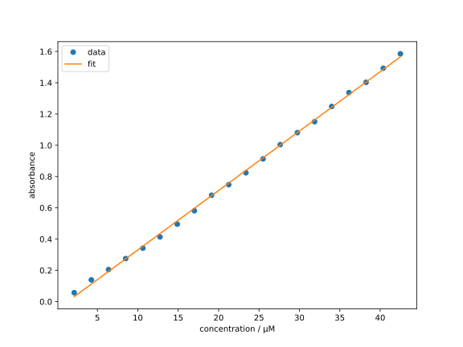

Lineare Regression
Eines der einfachsten Modell der Regressionsanalyse ist das lineare Modell, wobei der Abschätzer durch eine lineare Funktion der Form mit den skalaren Parametern und gegeben ist. Die Regressionsanalyse mit dem linearen Modell wird als lineare Regression bezeichnet.
Theoretische Grundlagen
Setzen wir nun das lineare Modell nach Gl. (1.7) in die Verlustfunktion der kleinsten Quadrate gemäß Gl. (1.3) ein, erhalten wir
Da unser Ziel darin besteht, die Parameter zu finden, welche die Verlustfunktion minimieren (vgl. Gl. (1.4)), müssen zumindest die notwendigen Bedingungen dafür erfüllt werden, d.h. die partiellen Ableitungen von nach und müssen verschwinden:
Nach einer etwas länglichen aber einfachen
Herleitung
Als erstes berechnen wir die partiellen Ableitungen von nach und . Da das Differenzieren linear ist, können wir die Summe in Gl. (1.8) über die einzelnen Terme aufteilen: Genau so verfahren wir mit der Ableitung nach und erhalten
Setzen wir nun die Ableitungen gleich null, erhalten wir die notwendigen Bedingungen für ein Minimum: Der Faktor spielt keine Rolle, da der Ausdruck gleich null gesetzt wird. Daher können wir ihn im Folgenden weglassen.
Durch einfaches Umstellen können wir die obigen Gleichungen als ein lineares Gleichungssystem in und schreiben: Da die Parameter und unabhängig von den Datenindizes sind, können wir sie aus den Summen herausziehen und erhalten wobei wir genutzt haben. Dieses Gleichungssystem ist äquivalent zu der Matrixgleichung in Gl. (1.9).
erhalten wir die Matrixgleichung für die Parameter und : Die Lösung dieses Gleichungssystems liefert uns die optimalen Parameter und für das lineare Modell.
Die (zumindest formale) Lösung des Gleichungssystems (1.9) ist , mit der Inversen der Matrix . Eine Matrix ist genau dann invertierbar, wenn ihre Determinante ungleich null ist. Die Determinante der Systemmatrix ist wobei wir die Abkürzung für den Mittelwert der eingeführt haben. Hätten wir nur einen einzigen Datenpunkt, wäre der Mittelwert gleich dem einzigen Datenpunkt und die Determinante der Systemmatrix gleich null. Das bedeutet, dass die Matrix nicht invertierbar ist und wir keine eindeutige Lösung für das lineare Modell erhalten. Erst ab zwei verschiedenen Datenpunkten ist das Gleichungssystem (1.9) eindeutig lösbar.
Nun wollen wir mit Hilfe der Gl. (1.9) die lineare Regression für ein einfaches Beispiel implementieren.
Implementierung
Betrachten wir die folgenden Messdaten1 der Lambert-Beer-Beziehung für Methylenblau in Wasser bei verschiedenen Konzentrationen und den zugehörigen Absorbanzen , gemessen bei mit einer Schichtdicke von 1 cm:
| / µM | / µM | ||
|---|---|---|---|
| 2.125 | 0.0572 | 23.38 | 0.8242 |
| 4.250 | 0.1391 | 25.50 | 0.9130 |
| 6.375 | 0.2049 | 27.63 | 1.0043 |
| 8.500 | 0.2754 | 29.75 | 1.0809 |
| 10.63 | 0.3420 | 31.88 | 1.1511 |
| 12.75 | 0.4139 | 34.00 | 1.2483 |
| 14.88 | 0.4956 | 36.13 | 1.3373 |
| 17.00 | 0.5815 | 38.25 | 1.4027 |
| 19.13 | 0.6806 | 40.38 | 1.4927 |
| 21.25 | 0.7481 | 42.50 | 1.5853 |
Bevor wir fortfahren können, müssen wir die Daten irgendwie in Python importieren. Der einfachste Weg für so einen kleinen Datensatz ist die manuelle Eingabe.
concentrations = [
2.125, 4.250, 6.375, 8.500, 10.63, 12.75, 14.88, 17.00, 19.13, 21.25,
23.38, 25.50, 27.63, 29.75, 31.88, 34.00, 36.13, 38.25, 40.38, 42.50,
]
absorbances = [
0.0572, 0.1391, 0.2049, 0.2754, 0.3420,
0.4139, 0.4956, 0.5815, 0.6806, 0.7481,
0.8242, 0.9130, 1.0043, 1.0809, 1.1511,
1.2483, 1.3373, 1.4027, 1.4927, 1.5853,
]
Hier haben wir die Daten in den Variablen concentrations und absorbances
der Typ List (Liste) definiert. Das erkennt man an der Verwendung der eckigen
Klammern [] und dem Komma , zwischen den einzelnen Werten. Mit dem
Gleichheitszeichen = weisen wir den Variablen die Werte zu.
Obwohl Python standardmäßig schon einige mathematische Funktionen für
Listen bereitstellt, hat das Paket numpy noch mehr sehr nützliche
Operationen für solchen Datenstrukturen. Daher importieren wir numpy
und konvertieren die Listen in den Datentyp numpy-array.
import numpy as np
concentrations = np.array(concentrations)
absorbances = np.array(absorbances)
Da numpy etwas länger zu schreiben ist, verwenden wir den Alias np,
definiert durch import numpy as np. Ab sofort können wir Inhalte
dieses Pakets mit np ansprechen. In den folgenden Zeilen verwenden
wir die Funktion np.array um die Listen in Arrays zu konvertieren.
Hier wird es deutlich, dass das Gleichheitszeichen = beim Programmieren
eine andere Bedeutung hat als in der Mathematik. Während in der Mathematik
das Gleichheitszeichen eine Äquivalenz zwischen zwei Seiten ausdrückt,
stellt dieses in der Programmierung eine Zuweisung dar. Deshalb ist es
hier möglich, die gleiche Variablename für die Arrays zu verwenden, da
die rechte Seite des Gleichheitszeichens zuerst ausgewertet wird und dann
der Wert der rechten Seite der Variablen auf der linken Seite zugewiesen
wird.
Als nächstes wollen wir die Elemente von und in
Gl. (1.9) berechnen. Dafür stellen wir
erstmal sicher, dass unsere Datenarrays gleich lang sind. Danach können wir
die Elemente mit Hilfe der np.sum-Funktion berechnen.
# make sure the number of data points is the same
assert len(concentrations) == len(absorbances)
number_of_points = len(concentrations)
sum_x = np.sum(concentrations)
sum_x_sq = np.sum(concentrations**2)
sum_y = np.sum(absorbances)
sum_xy = np.sum(concentrations * absorbances)
Hier haben wir die
built-in Funktion
len verwendet, um die Länge der Arrays zu bestimmen. Die Funktion
np.sum berechnet die Summe aller Elemente in einem Array. Mit dem
Stern * ist die Multiplikation gemeint. Die Verwendung von * zwischen
zwei Arrays führt zu einer elementweisen Multiplikation. Der
Doppelstern ** bedeutet in Python die Potenzierung. Hier wird also
das Array concentrations elementweise quadriert.
Info für Fortgeschrittene
Die Operatoren * und ** können auch als unäre Operatoren, also
Operatoren für nur ein Argument, im Gegensatz zu binären Operatoren
wie die Multiplikation, die zwei Argumente benötigt, verwendet werden.
Als unärer Operator haben sie dann eine andere Bedeutung. Die Interessierten,
die schon etwas Erfahrung in der Programmierung haben, können sich die
details z.B. hier
nachlesen.
Nun können wir die Systemmatrix und den Vektor zusammenstellen:
a_arr = np.array([
[number_of_points, sum_x],
[sum_x, sum_x_sq],
])
b_arr = np.array([sum_y, sum_xy])
Beachte Sie, dass für die Erstellung einer Matrix (bzw. eines sog. 2D-Arrays) eine Liste von Listen verwendet wird. Die innere Liste entspricht einer Zeile der Matrix. Die äußere Liste enthält die Zeilen der Matrix. Jetzt können wir endlich das Gleichungssystem (1.9) lösen, um die optimalen Parameter und zu erhalten:
beta = np.linalg.solve(a_arr, b_arr)
print(beta)
Die Funktion
np.linalg.solve
löst (numerisch) ein lineares Gleichungssystem. Mit der print-Funktion
geben wir die Lösung anschließend aus.
Eine analytische Lösung des Gleichungssystems (1.9) ist möglich, da die Systemmatrix nur groß ist und damit analytisch invertierbar.
Wenn man schon weiß, welche Werte und haben sollen und nur den Algorithmus testen möchte, kann man die Verifikation z.B. wie folgt durchführen:
beta0 = beta[0]
beta1 = beta[1]
assert np.isclose(beta0, -0.04907034)
assert np.isclose(beta1, 0.03800109)
Hier haben wir zuerst den Array beta mit eckigen Klammern [] indexiert.
Beachten Sie, dass die Indizierung in Python bei 0 beginnt. Das bedeutet, dass
dem 0-ten Eintrag und den ersten Eintrag des Arrays beta
entspricht. Anschließend haben wir die Werte von und
mit Referenzwerten verglichen.
Es wurden nicht die exakten Werte mit == verglichen, da einerseits
float-Zahlen (Gleitkommazahlen)
nicht exakt dargestellt werden können und andererseits die numerische
Lösung des Gleichungssystems nicht exakt sein muss. Deshalb haben wir
die Funktion
np.isclose
verwendet, die die Werte mit einer (in diesem Fall voreingestellten)
Toleranz vergleicht.
Das Lambert-Beer-Gesetz besagt, dass die Absorption linear von der Konzentration abhängt mit der Proportionalitätskonstante , also Das molare Extinktionskoeffizient kann also aus dem linearen Parameter berechnet werden als
Jetzt haben wir die optimalen Parameter und für den obigen Datensatz berechnet. Wie soll man wissen, wie gut die lineare Regression ist? Dafür gibt es verschiedene mathematische Gütekriterien, die wir hier aber erstmal nicht betrachten. Stattdessen wollen wir die optimalen Parameter grafisch darstellen und die Qualität der Regression visuell beurteilen.
Visualisierung
Zur Visualisierung der optimalen linearen Regression verwenden wir das
Python-Paket matplotlib. Hier importieren wir das Untermodul pyplot
mit dem Alias plt:
import matplotlib.pyplot as plt
Für die graphische Darstellung mit matplotlib benötigen wir immer
die Objekte Figure und Axes. Diese können wir mit der Funktion
plt.subplots
erstellen:
fig, ax = plt.subplots(figsize=(8, 6))
Wir haben hier als Argument figsize=(8, 6) übergeben, welches die Größe
der Abbildung in Zoll angibt. Die Größe der Abbildung ist aber nicht
in Stein gemeißelt und kann je nach Bedarf angepasst werden.
Nun wollen wir die Messdaten als Punkte und die lineare Regression als
Linie in das Diagramm eintragen. Dafür verwenden wir die Funktion
ax.plot:
ax.plot(concentrations, absorbances, 'o', label='data')
ax.plot(concentrations, beta0 + beta1 * concentrations, label='fit')
Für die Messdaten haben wir das Argument o verwendet, damit diese als
Punkte dargestellt werden. Andere
Marker
wie z.B. s für Quadrate oder x für Kreuze können auch verwendet werden.
Ohne Angabe dieses Arguments werden die Daten als Linie dargestellt.
Bei beiden Aufrufen von ax.plot haben wir die Argumente label verwendet.
Diese dienen dazu, die Linien in der Legende zu benennen.
Für die Vollständigkeit wollen wir auch die Achsen noch beschriften und eine Legende hinzufügen:
ax.set_xlabel('concentration / µM')
ax.set_ylabel('absorbance')
# automatically create a legend
ax.legend()
Die Funktionen ax.set_xlabel und ax.set_ylabel akzeptieren einen
str (String, Zeichenkette) als Argument, der als Achsenbeschriftung
dient. Die Funktion ax.legend fügt eine Legende hinzu. Ruft man sie
ohne Argumente auf, wird die Legende aus den label-Argumenten der
ax.plot-Funktionen automatisch generiert.
Nachdem alle Elemente des Diagramms eingefügt wurden, können wir die
Abbildung mit der Funktion plt.show anzeigen lassen:
plt.show()
Wenn das Programm erfolgreich ausgeführt wird, sollte ein Diagramm wie das Folgende erscheinen: 
Dieses Diagramm zeigt uns die Ergebnisse der linearen Regression, auch wenn
man über die ästhetische Gestaltung des Diagramms streiten kann. Im Laufe
dieses Kurses werden wir noch mehr Funktionalitäten von matplotlib
kennenlernen, die uns helfen, Elemente des Diagramms dem persönlichen
Geschmack entsprechend zu gestalten.
Auf den ersten Blick scheint die Regressionsgerade sehr gut zu den Messdaten zu passen. Um den Unterschied zwischen den Messdaten und der Regressionsgerade deutlicher zu machen, können wir die Residuen, also die Differenz zwischen den Messdaten und der Regressionsgerade, in einem weiteren Diagramm darstellen.
residuals = absorbances - (beta0 + beta1 * concentrations)
fig2, ax2 = plt.subplots(figsize=(8, 6))
ax2.bar(concentrations, residuals)
ax2.set_xlabel('concentration / µM')
ax2.set_ylabel('absorbance residuals')
plt.show()
Nach dem Berechnen und Speichern der Residuen in der Variablen residuals
wurden ein weiteres Figure- sowie Axes-Objekt erstellt. Die Residuen
wurden in ein Balkendiagramm dargestellt, welches mit der Methode ax2.bar
erstellt werden kann. Das Diagramm sieht dann wie folgt aus:

Jetzt kann man erkennen, dass bei niedrigen und hohen Konzentrationen die Abweichung positiv ist, während sie bei mittleren Konzentrationen negativ ist. Das könnte auf eine leichte positive Krümmung der Daten hinweisen, die mit dem linearen Modell nicht erfasst wird. Eine Zuordnung dieses Verhaltens zu einer systematischen oder zufälligen Abweichung bedarf allerdings in der Regel einer tieferen Analyse. Tatächlich liegt hier in den Daten eine leichte Nichtlinearität vor, welches die Abweichung vom Lambert-Beer-Gesetz v.a. bei hohen Konzentrationen demonstriert. Wer sich für die genaue Erklärung dieser Abweichung von Methylenblau in Wasser interessiert, kann sich z.B. die Publikation A. Fernández-Pérez, T. Valdés-Solís, G. Marbán, Dyes and Pigments 2019, 161, 448–456 durchlesen. Ob die lineare Regression in diesem Fall sinnvoll ist, hängt von der gewünschten Genauigkeit der Modellierung ab.
Hier haben wir die import Befehle in den jeweiligen Abschnitten platziert,
um die Abhängigkeiten der verschiedenen Teile des Skripts zu verdeutlichen.
Der resultierende Code kann ohne Fehler interpretiert werden.
Allerdings ist es in Python üblich, die Importe am Anfang des Skripts zu
platzieren, also
import numpy as np
import matplotlib.pyplot as plt
# Rest des Skripts
Die Autoren bedanken sich bei Dr. Hans-Christian Schmitt für die Bereitstellung der Daten.
Übung
Aufgabe 1.1: Lineare und quadratische Regression
In dem obigen Beispiel haben wir die numpy Funktion np.linalg.solve verwendet, um die Lösung des
Gleichungssystems der linearen Regression numerisch zu berechnen. In diesem Zusammenhang bedeutet
dies, dass der Computer einer Reihe von Rechenschritten und Algorithmen folgt, um die approximative
Lösung des Gleichungssystems zu finden. Für das Gleichungssystem der linearen Regression gibt es jedoch
auch eine analytische Lösung, die direkt berechnet werden kann.
(a) Analytische Lösung der linearen Regression herleiten
Zeigen Sie, dass die Lösung des Gleichungssystems in Matrixform gegeben ist durch:
Lösen Sie dazu zunächst die erste Gleichung des Systems nach auf und setzen Sie das Ergebnis in die zweite Gleichung ein. Verwenden Sie außerdem die Definitionen der Mittelwerte und .
(b) Implementieren der analytischen Lösung für Messdaten von Methylenblau
Nutzen Sie die analytische Lösung, um die Parameter der linearen Regression für die Messdaten von Methylenblau
explizit zu berechnen. Vergleichen Sie die Ergebnisse mit den Ergebnissen, die Sie mit np.linalg.solve
erhalten haben.
(c) Matrixgleichung der quadratischen Regression herleiten
Die quadratische Regression ist eine Erweiterung der linearen Regression, bei der die abhängige Variable durch ein Polynom zweiten Grades in der unabhängigen Variable angenähert wird. Die allgemeine Form der quadratischen Regression ist gegeben durch:
In Analogie zur linearen Regression können wir die quadratische Regression als ein lineares Modell in den Parametern auffassen. Zeigen Sie, dass dieses Modell durch die folgende Matrixgleichung beschrieben wird:
Setzen Sie dazu die quadratische Funktion in die allgemeine Form der Verlustfunktion der Methode der kleinsten Quadrate ein und bilden Sie die Ableitungen nach den gesuchten Parametern.
(d) Quadratische Regression implementieren und an Methylenblau-Daten anwenden
Fahren Sie nun fort wie für die lineare Regression, indem Sie das Gleichungssystem der quadratischen
Regression aus Teilaufgabe (c) für die Methylenblau-Daten numerisch lösen.
Konstruieren Sie dazu zunächst die benötigte Matrix, bzw. den Vektor in Form von Arrays, und verwenden
Sie die Funktion np.linalg.solve. Plotten Sie anschließend die quadratische Regression zusammen
mit den Datenpunkten. Plotten Sie ebenfalls die Resiuduen und vergleichen Sie die Ergebnisse mit der
linearen Regression.